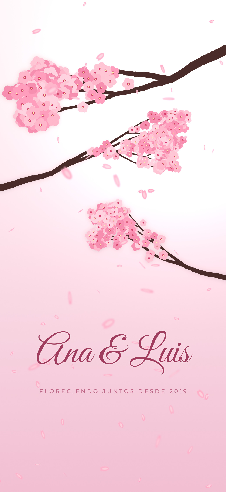
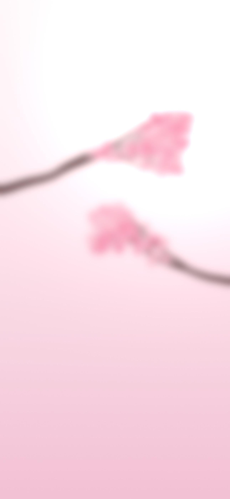
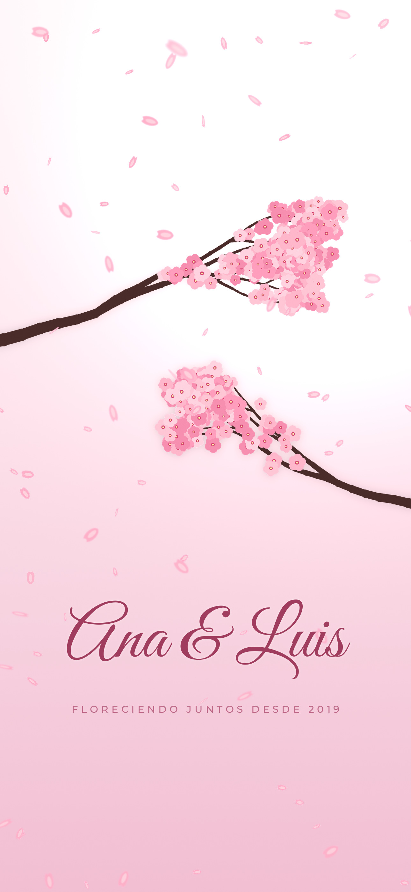
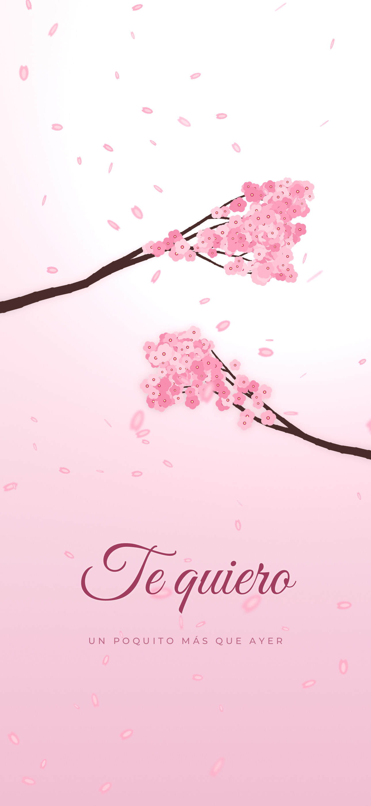
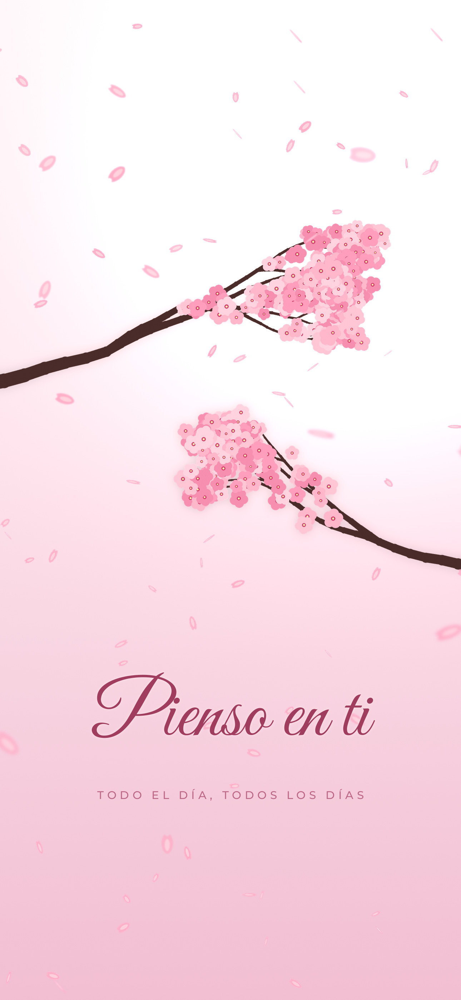
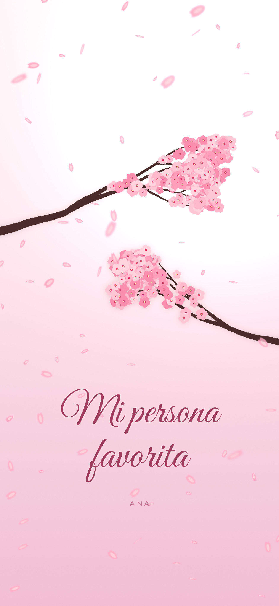
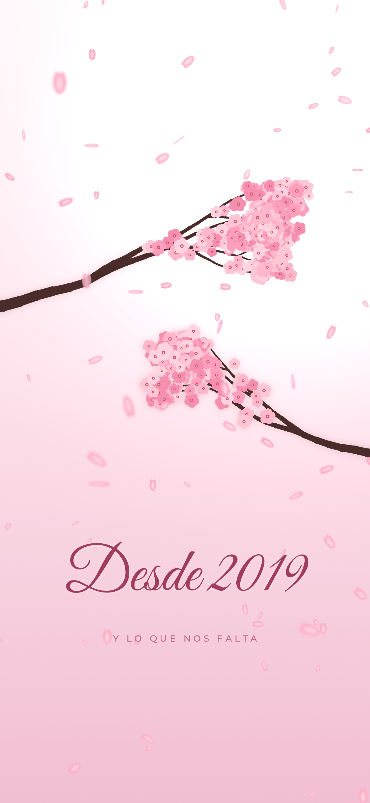
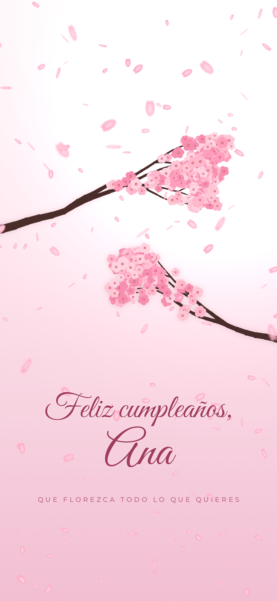

El iPhone no deja poner un video de fondo, así que probamos lo que sí trae de fábrica. Ábrelo desde el iPhone, en Safari, y prueba las partes que quieras. Al final hay una lista de lo que nos interesa saber.
La rama grande de arriba debería quedar enfrente del reloj, y el fondo se mueve un poco cuando inclinas el celular. Funciona en iPhone 12 o más nuevo.

Fondo de bloqueo 3D
Pantalla de inicio (va a juego)Con fotos aleatorias, cada vez que tocas la pantalla de bloqueo aparece otro mensajito. La última es la sorpresa de cumpleaños.

Ana & Luis
Te quiero
Pienso en ti
Mi persona favorita
Desde 2019
Cumpleaños (especial)Es la única parte que necesita una app gratuita, solo para convertir el video. Si la vendemos, el cliente la recibiría ya convertida.
Con la app Atajos, que ya viene en el iPhone, el fondo puede cambiar solo a la versión de cumpleaños. Esta prueba lo hace en unos minutos en lugar de esperar a la fecha.
Si algún botón se llama distinto en tu iPhone, dinos cómo se llama y lo corregimos.